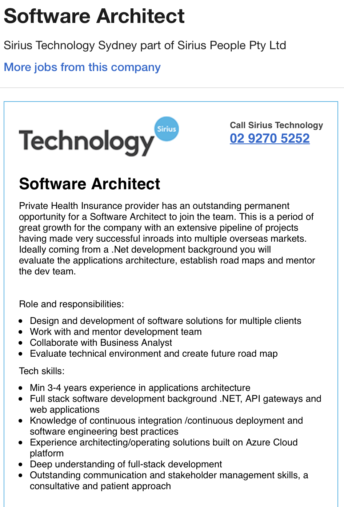

A software architect is a Leader of a team of software engineers or developers that spearhead the production of software solutions for client projects. The responsibilities of a software architect include
Software Architects are challenging roles that require exceptional standards in all areas. The requirements to become a Software architect are extensive and include holding a bachelor’s degree in software engineering, computer science, software development or similar. Employers also ask for a minimum 3-4 years’ experience in the industry minimum with a full stack development background. Below is job advertisement that I would find to be an ideal job for myself in the future;
https://www.seek.com.au/job/41112999?type=standard#searchRequestToken=740cca7d-998b-4678-bd26-6084891e97dc
Currently my highest qualification is at Higher School education and my background experience is not in the field of any sub-specialisation of IT. To achieve this goal, I would require completing my studies with a minimum of a bachelor’s degree. My next step would be to obtain a job inside the industry that would allow me to gain experience for my future prospect. Junior Web developer is a great position within the industry to understand the ins and outs whilst also enhancing my own skills in full stack development, software solutions and programming languages.